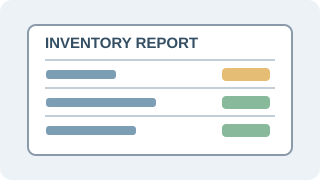

A multi-page website built with HTML to practise web structure and accessibility.
This website brings together my background, skills, projects, interests, and contact form. It is designed as a practical demonstration of HTML elements and attributes.
What this project demonstrates
Creating a complete HTML document
Using headings, paragraphs, links, lists, and images
Connecting six pages with a consistent navigation menu
A student-focused concept for finding and sharing university events.
As part of collaborative frontend learning, I have been involved in work around an AASTU Events Hub. The idea is to help students discover activities and campus events in one place.
Project goals
Make event information easier to discover
Present event names, dates, and descriptions clearly.
Organize information so students can scan it easily.
Practise teamwork and frontend development.
Project status: learning / collaborative project; this page does not claim that the project is complete.
Project 3: Inventory and Sales Management System

A coursework project concept for organizing products and sales information.
In programming coursework, I have worked with the idea of an inventory and sales management system, including product sorting, low-stock reporting, and sales reporting.
Core features discussed
sortProducts() — organize product records.
lowStockReport() — identify products that need restocking.
salesReport() — summarize sales information.
Achievements and Progress
Learning achievement: Building a six-page HTML website and practising semantic elements.
Learning achievement: Taking part in frontend learning and collaborative project work.
Personal strength: Helping younger learners by explaining difficult topics in simpler steps.
I have not listed grades, awards, or certificates that I have not confirmed.
Project Files
The HTML files for this portfolio are included in the project folder. You can open the home page to explore the website.
For now, no separate project report PDF is included.
My Next Goals
Complete more small websites with connected pages.
Improve CSS and JavaScript skills after this HTML-only exercise.